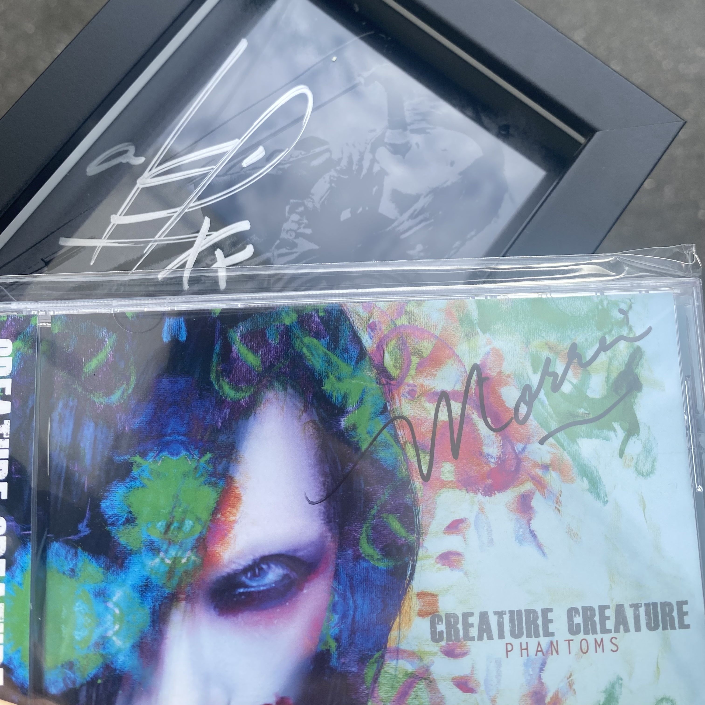
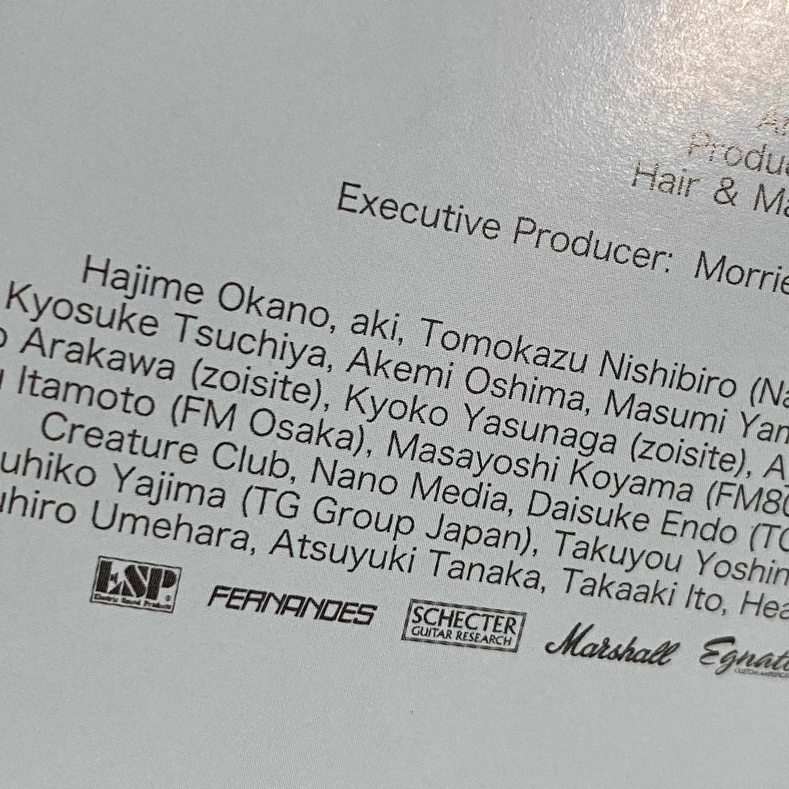
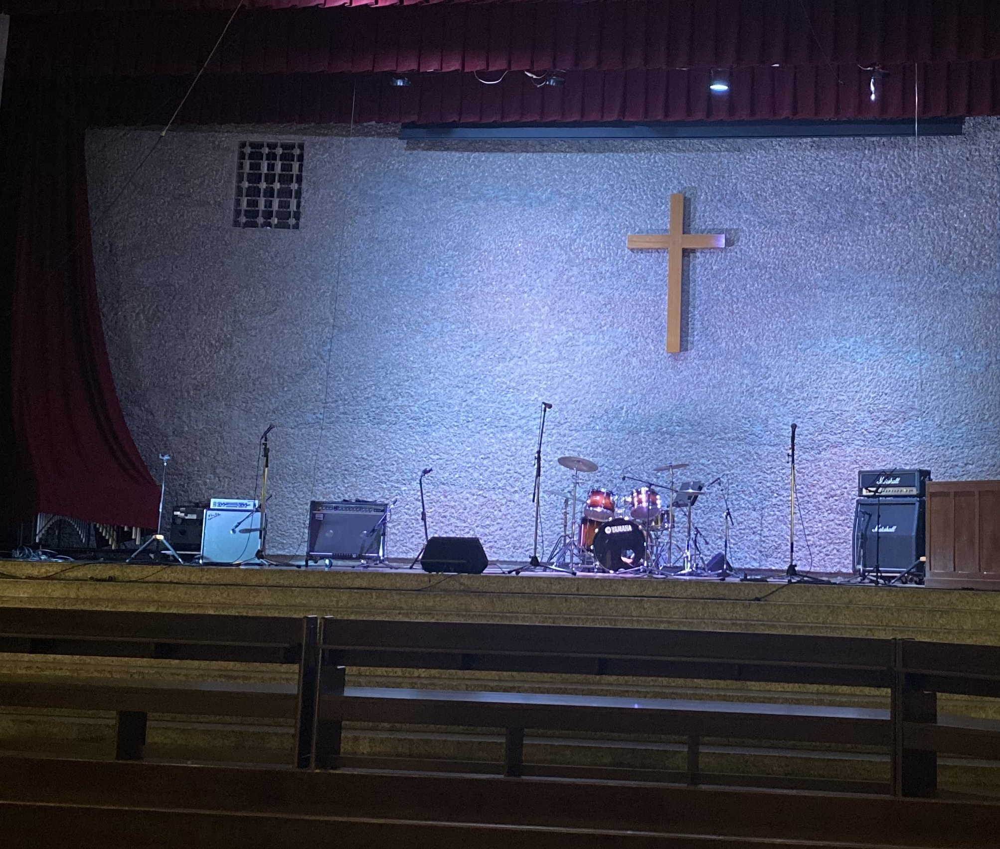

他の人のライブを見に行ったら、akiを見つけた。
2026.09.21
Creature Creatureのライブ
Laputaやakiさんについて調べていると、昔の雑誌記事やネットの記事の中に、たびたび「MORRIE」という人物の名が出てくる。 DEAD ENDのボーカリストで、akiさんが高校生の頃に強い影響を受けた人らしい。 akiさんご本人も、DEAD ENDを聴いたときの衝撃や、コピーをしていた頃にMORRIEさんのコスプレをしていたことなどを語っているし、 後にDEAD ENDのTributeアルバムに参加している（出典1）。 色んなビジュアル系バンドの人たちがMORRIEさんの影響を受けているとの話も聞く(出典2)。 でも、私はそれまでMORRIEさんなんて知らなかった。そんなある日、MORRIEさんを中心とするCreature Creatureがたまたま地元に来ることを知り、すぐにチケットを取った。 250人くらいしか入れない小さいハコ。そんなに近くで見れるのかという驚き。2026年9月Creature Creatureのライブを観に行った。
ライブの会場でCDを購入するとMORRIEさんのサインが入っているとのことで、早速購入してみた。 細めのペンで、繊細に、さらさらと書かれたサインで、派手さというより、とても上品で美しいサインだと感じた。 せっかくMORRIEさんを観る機会を得たので、以前から持っていたakiさんのサインも持っていった私は、MORRIEさんのサインと並べて、会場近くで写真を撮ってみた。

ライブが始まると、まず驚いたのはそのパワーだった。私はMORRIEさんの過去をほとんど知らないし、少しYouTubeで見た程度。 DEAD ENDをリアルタイムで知っているわけでもない。それでも、ステージに立つ姿には、年齢を感じさせない強さがあった。 低音からファルセットまで独特なビブラートの効いた歌い方、歌詞における世界観、大きな手、セクシーな衣装、圧倒的な存在感…どこか神々しいようにも見えた。 長い時間を音楽とともに生きてきた人が、それでも自分の美しさや信念のようなものを失わずにステージに立っている。 そんなふうに感じた。1曲も知らないのに、好きだと思える曲がいくつもあった。 「ああ、これがakiさんの憧れていたMORRIEさんの世界なんだ」と、ライブを観ながら思った。とにかく全部がかっこいい!! こんな人今まで見たことがない!! 私にはちょっとした衝撃。
Bassの人時さんも出演していた。 人時さんはakiさんの活動でも一緒に演奏していたけれど、いろいろな人の作品で、こんなにたくさんの曲を、 それぞれの世界観を保ったまま演奏できるというのは本当にすごいと思う。 そしてギターのHIROさん。La'cryma ChristiはLaputaと仲が良いバンドと雑誌で読んだことがある（出典3）。 こうして別のライブを観ていても、なんとなく、つながりというか縁のようなものを感じる。
そして、その日の夜。家に帰って、会場で買ったCreature CreatureのCDを改めて眺めていた。 クレジットの「Special Thanks」のところを何気なく見ていたら、そこに「aki」の名前があった。「……aki」。

手元にあるakiさんのCDを確認してみると、そこにも「MORRIE」の名前が記載されていた（出典4・5）。 こうして作品を調べてみると、二人の名前は、何年もの間、お互いの作品の中に残っている。
高校生のバンドを観て
Creature Creatureの翌週、高校生のバンド演奏を観る機会があった。 まだ完成された演奏ではない。荒削りで、少し危なっかしくて、それでもステージの上の高校生たちはとても楽しそうだった。 そんな彼らに煽られるようにして、こちらまで楽しくなってしまった。
ふとステージの後ろを見ると、そこには十字架があった。 もちろん、Laputaのステージとの直接的な関係があるわけではないと思われるが、その光景が、なんとなくLaputaのステージを思い出させた。

「LaputaがLaputaになる前、akiさんがakiになる前も、きっとこんな時間があったんだろうな」と思った。 まだ何者でもない。ただバンドを組んで、楽器を弾いて、歌って、ステージに立っている。これからどうなるのかも分からない。 そんな時間が、きっとLaputaのメンバーにもあったのだろう。 高校生の頃、同級生だったakiさんとTomoiさんが他の友達とバンドを組んだ時、実際にどんな場所で、どんなふうに演奏していたのか私は知らない。 でも、目の前で楽しそうに演奏する高校生を見ていると、「この場所で、きっとakiさんとTomoiさんもこんなふうに演奏していた時期があったんだろうな」と思ってしまう。 そう考えると、なんとも言えない気持ちになった。
完成された作品を聴くのとは違って、まだ何者でもない人たちが音楽を始めたばかりの瞬間を見ることができた。 それは、akiさんの過去を想像するための、ほんの小さな手掛かりのようにも感じられた。
他の音楽を通して
akiさんが憧れていたMORRIEさんを観に行き、まだ何者でもない高校生たちのバンドを観た。 どちらもLaputaのライブではないし、akiさんがステージにいるわけでもない。 それなのに、どちらの場所でもakiさんのことを考えていた。 Creature Creatureのライブでは、akiさんがなぜMORRIEさんに憧れていたのかを、少しだけ実感することができた。 高校生のバンドを観れば、Laputaになる前のakiさんの姿を想像した。
私はakiさんを探しに行ったわけではない。ただ、akiさんやLaputaに関連する音楽を興味本位で聴きに行っただけだった。 それなのに、行った先々で先回りしていたakiさんを見つけて、勝手に卒倒しそうになった。 もう新しい歌を聴くことも、新しいステージを見ることもできないけれど、 残された作品や、akiさんが好きだった音楽や、そこにつながっている人たちを辿っていくと、 まだ知らなかったakiさんの姿に出会えることがある。今回の二つの出来事は、そんなことを改めて感じさせてくれた。
出典・参考資料
- 出典1： DEAD END Tribute「aki（ex Laputa）COMMENT」 — akiさん本人によるDEAD ENDから受けた影響についてのコメント。 公式コメント
- 出典2： 【黒夢 禁断の相関図】清春、人時さんと語る、禁断の…？！ — MORRIEさんについてのコメント。7分20秒辺り。 黒夢のコメント
- 出典3： 『ROCK iT! No. 28』 シンコーミュージック、1997年11月増刊、p.111
- 出典4： aki『DISCORD』CDのクレジット。
- 出典5： aki『GREED』CDのクレジット。
- 写真： 本文中のライブ関連写真は筆者撮影。CDクレジット写真も筆者所蔵のものを撮影したもの。
Last Update : 2026.09.21